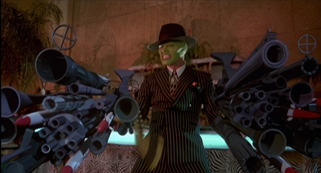
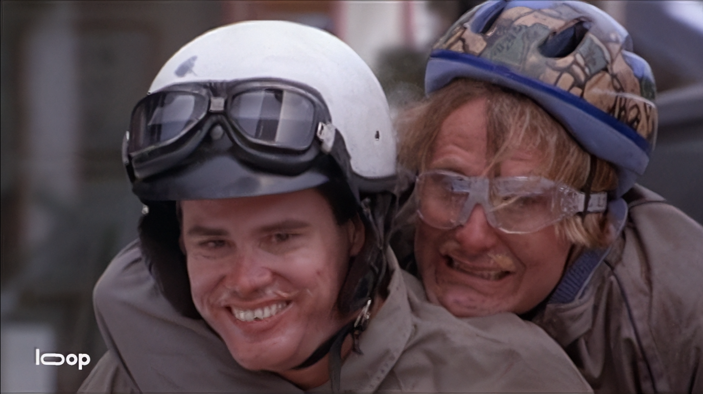
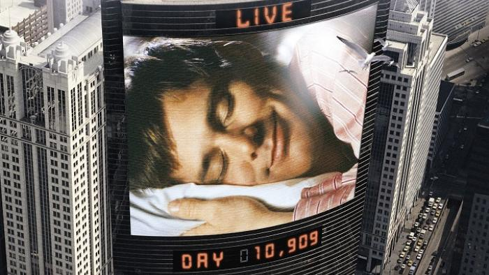
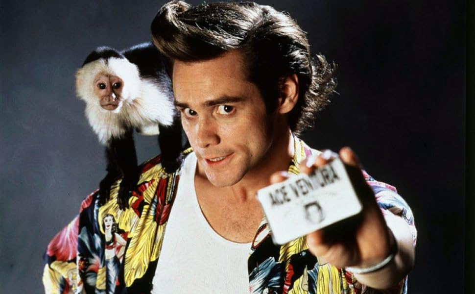
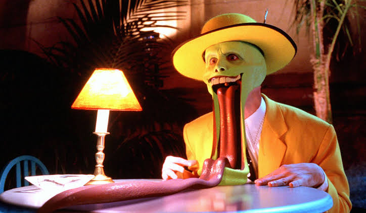
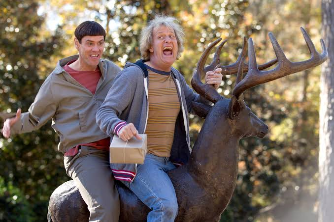
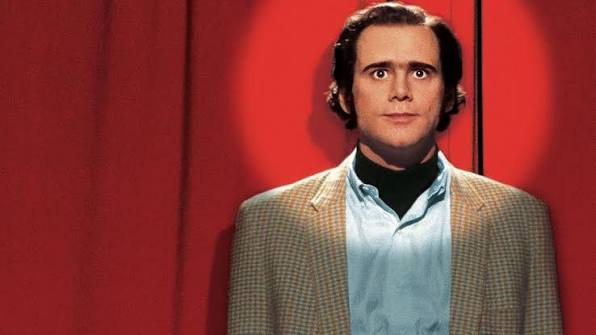
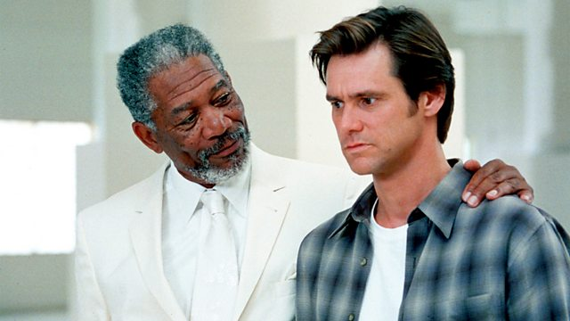
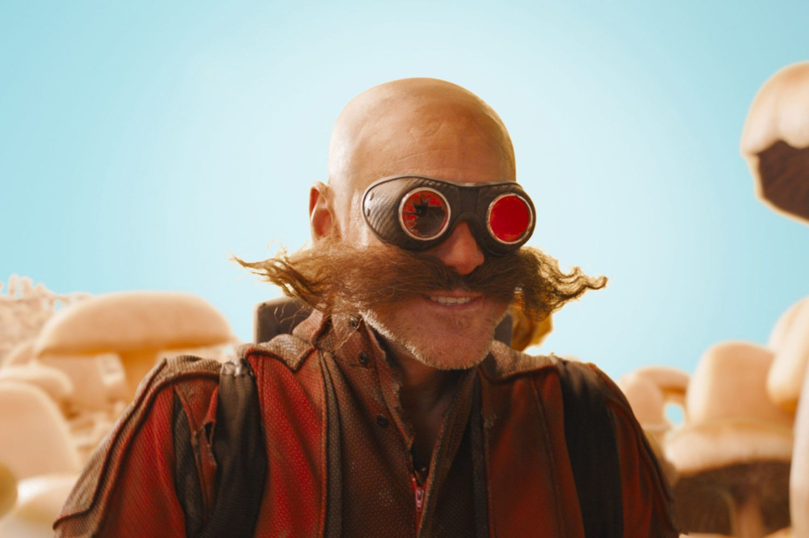

The Mask (1994)
A timid bank clerk turns into a grinning superhero with wild abilities after finding a mask.
Explore on IMDb ↗
The art of making us smile.
James Eugene Carrey (born January 17, 1962) is a Canadian and American actor and comedian. Known primarily for his energetic slapstick performances, he is regarded as one of the most prominent comedic actors of his generation. He broke out as a film star after starring in a string of box office hits, such as Ace Ventura: Pet Detective, The Mask, Dumb and Dumber (all 1994), and Batman Forever (1995).
Search the five actors and this actor’s film collection.
Career statistics · checked 12 November 2026. Filmography ↗ · Leading-role source ↗
Screen roles count credited acting entries in the source’s film and television tables, including voice work, narration, cameos, short films and television films. A series is not counted once per episode. Multiple characters within one entry count as one credit; separately listed character credits count separately. Duplicate entries for the same work are merged. Self appearances, archive footage, credit-only appearances, production-only work, music videos, advertisements, video games and unreleased projects are excluded.
Feature films count released feature-length works in the film table, including credited narration in documentaries. Short films and television films are excluded. These are published-filmography totals, not a count of the four titles featured on this page.
Leading film roles use The Numbers’ classification, including leading ensemble casts, for titles covered by its box-office database. This source has different coverage from the filmography totals; it is not a universal classification of every role.
| Title | Character | Year | Format |
|---|---|---|---|
| The Mask | Stanley Ipkiss | 1994 | Film |
| Dumb and Dumber | Lloyd Christmas | 1994 | Film |
| The Truman Show | Truman Burbank | 1998 | Film |
| Eternal Sunshine of the Spotless Mind | Joel Barish | 2004 | Film |
No matching titles. Try a different search.

A timid bank clerk turns into a grinning superhero with wild abilities after finding a mask.
Explore on IMDb ↗
Two dimwitted friends embark on a cross-country trip to return a briefcase.
Explore on IMDb ↗
An insurance salesman discovers his entire life is actually a TV show.
Explore on IMDb ↗





What is your favorite Jim Carrey role? Share your thoughts with us.
Student demo: feedback is processed locally in your browser and is not sent or stored.